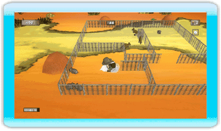

10 |
Hekken Maken |
 |

Druk op
Tip - Als je heel snel moet stoppen met het bouwen van een hek, kun je het hek aan zichzelf vastmaken door snel een lus te maken.
Je kunt elk hek dat je gebouwd hebt vernietigen door voor het hek te gaan staan en de Wii-afstandsbediening snel op en neer te schudden. Je kunt ook over een hek springen door op te drukken. Gebruik de Hekmeter om bij te houden hoeveel hekken je nog over hebt. Als je geen meer over hebt, eindigt het niveau en zul je verdrietig zijn.
Tip - Zorg ervoor dat tijdens je omheiningbouwavontuur je omheining geen gat heeft, anders kunnen de sluwe dieren ontsnappen. |
 |
 |
 |